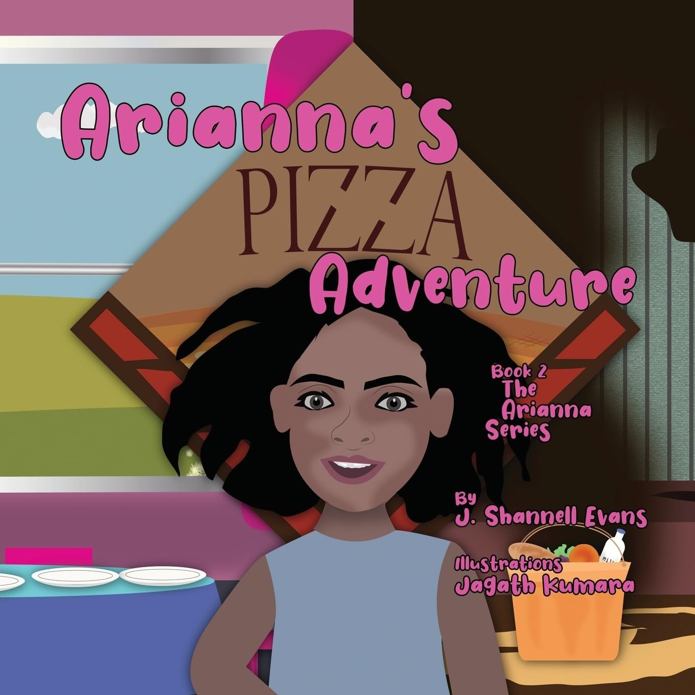

Caregiver memoir
The Long Nightmare
My Family’s Journey With Dementia
Evans follows dementia across generations of her family and writes about what it means to care for someone you love.
Memoir listing at ThriftBooks Hear Evans on caregivingA forty-day Christian devotional
Spend forty days considering God’s character and love, with encouragement for the daily practice of discipleship.
Find your editionReading the devotional
Evans writes about knowing God personally. The forty-day format gives you time to reflect on his attributes and consider how that understanding can shape the way you live out your faith.
ISBN 9781465395672
ISBN 9781465395665
2019 ebook · ISBN 9781733289610
Mystery, memoir and biography
Caregiver memoir
My Family’s Journey With Dementia
Evans follows dementia across generations of her family and writes about what it means to care for someone you love.
Memoir listing at ThriftBooks Hear Evans on caregiving
Family mystery
After Caroline’s unexplained death, her daughter Virginia looks for answers with the help of her husband, Jack, and brother, Luke.

Biography
The life of Thomas A.E. Evans, K.C., from an ambition he formed as a boy to the obstacles he overcame to realize it.
Children’s books
Start with a wish that comes true, then follow Arianna through the case of the missing pizza and a secret passage.
Book 1
A wish comes true and changes how Arianna sees what she already has.
Book 1 at Wingdon
Book 2
A pretend pizza party turns into a real case of missing food.
Book 2 at Wingdon
Book 3
With the town staying home, Arianna and Sally discover a secret passage.
Book 3 at WingdonCredited to J. Shannell Evans and Tristan Thompson.
Evans publishes her own work and works with other writers. Her publishing credits include Golden Wood by Dr. Harris Evans.